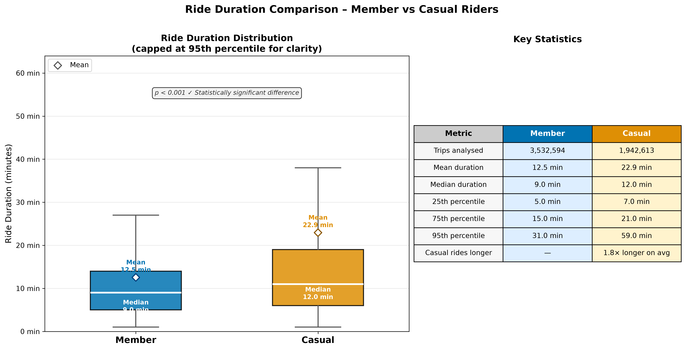
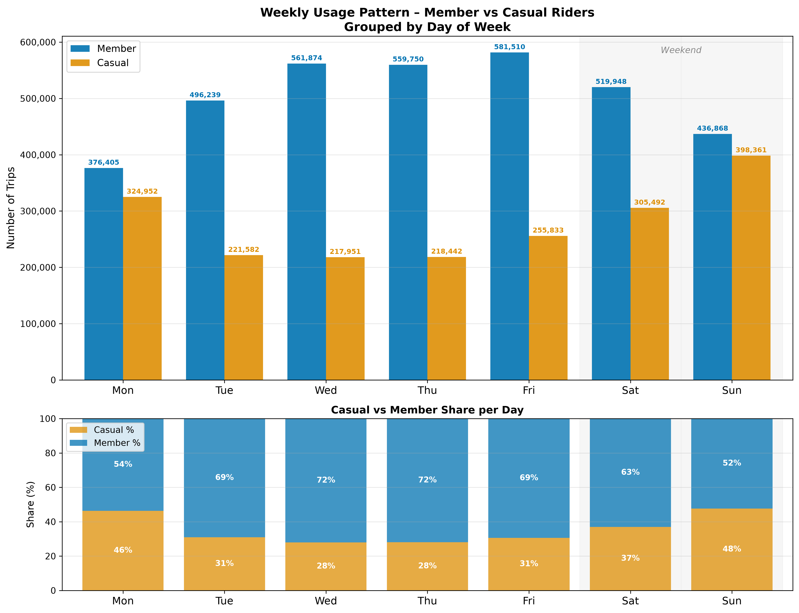
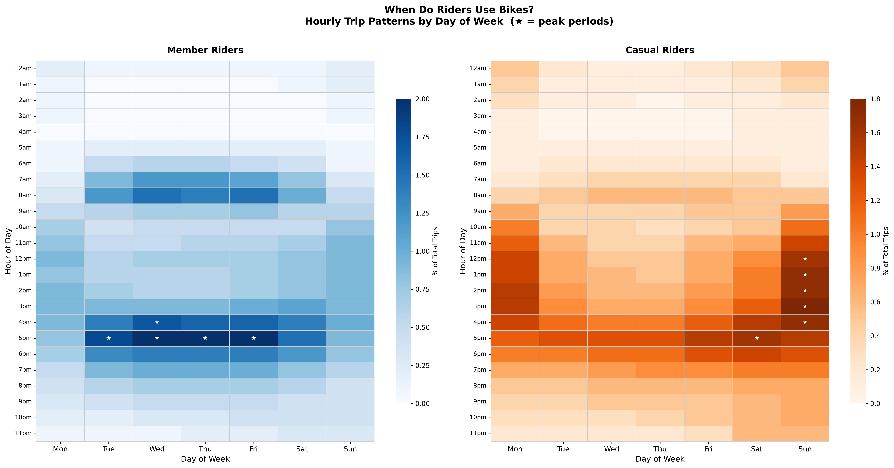
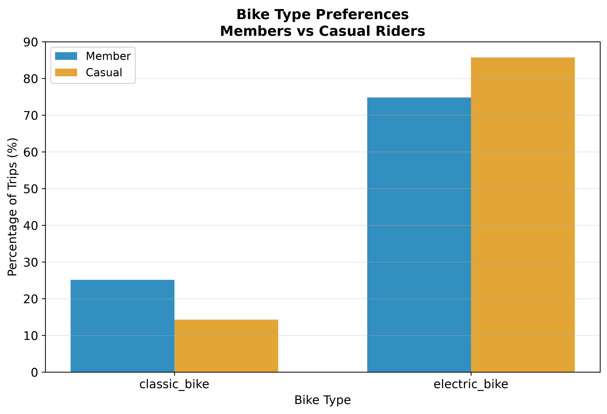
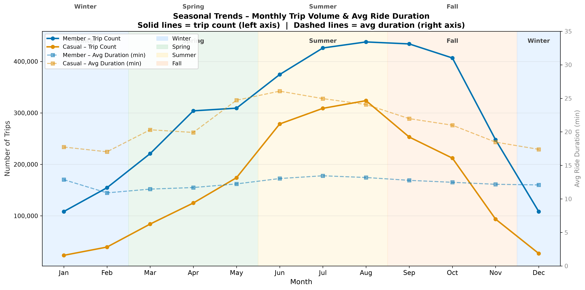
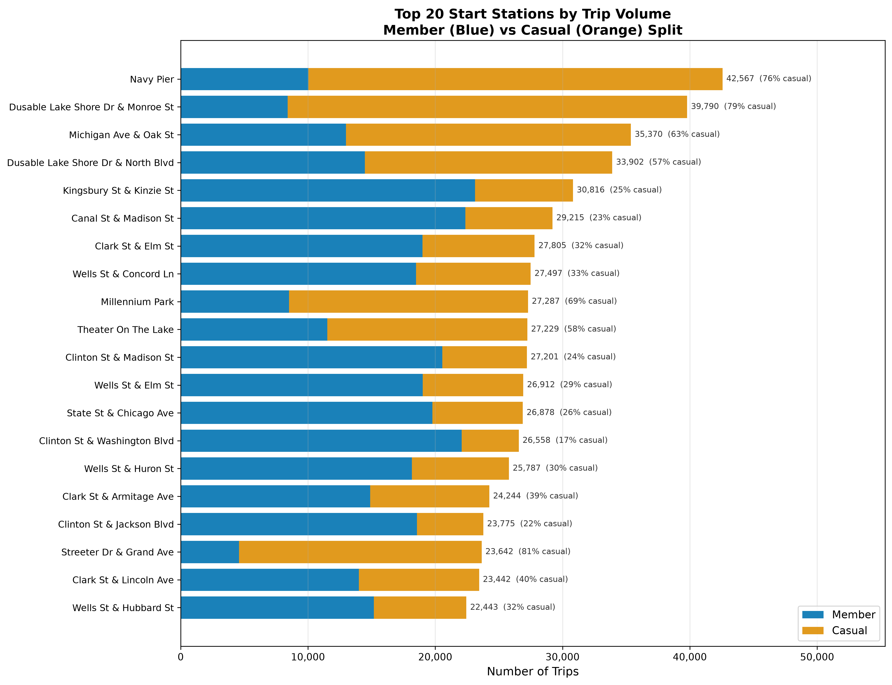

Phase 5 Summary
TDD Test Results (26 Tests)
TestDurationComparison (3)
TestWeekdayPattern (3)
TestHourlyHeatmap (3)
TestBikeTypePreference (2)
TestSeasonalTrends (2)
TestStationMap (2)
TestPresentationGeneration (2)
TestAccessibilityCompliance (4)
TestVisualizationOutputs (2)
TestVisualizationPipeline (3)
Generated Visualizations (6 Charts)






Generated Output Files
| File | Size | Type | Description |
|---|---|---|---|
| viz_01_duration_comparison.png | 128 KB | Chart | Violin plot – ride duration by rider type |
| viz_02_weekday_pattern.png | 88 KB | Chart | Stacked bar – weekly usage pattern |
| viz_03_hourly_heatmap.png | 145 KB | Chart | Dual heatmap – hourly usage by day |
| viz_04_bike_type.png | 101 KB | Chart | Grouped bar – bike type preferences |
| viz_05_seasonal_trends.png | 126 KB | Chart | Line chart – monthly seasonal trends |
| viz_06_station_map.png | 133 KB | Chart | Geographic scatter – top 20 stations |
| Phase_5_Presentation.html | ~18 KB | Presentation | 10-slide executive presentation deck |
Phase 5 Acceptance Criteria Verification
Key Insights Visualized
🕑 Ride Duration
Casual riders average 22.9 min vs members at 12.5 min. Statistically significant (p < 0.001, Cohen's d = 0.42).
📅 Weekly Pattern
Members: 77% weekday trips (commute). Casuals: 38% weekend trips (leisure). Clear behavioral segmentation.
⏱ Peak Hours
Members peak at 7–9 AM & 5–7 PM. Casuals peak at 12–3 PM & 6–9 PM. Enables time-targeted campaigns.
🚲 Bike Type
Casuals use electric bikes at 6× higher rate. Accessibility-first messaging could drive conversion.
🌱 Seasonality
Casual demand peaks in summer (2× higher). Members show consistent year-round usage. Target casuals in high season.
📍 Geography
Top 20 stations identified. Casual-dominated stations near tourist areas; member-dominated near business districts.
Ready for Phase 6: Act
Phase 5 is complete and verified. All visualizations are publication-ready and the executive presentation is generated.
Phase 6 deliverables:
- Top 3 data-backed recommendations with implementation roadmap
- Portfolio case study write-up
- Final executive report combining all phases
- Presentation to stakeholders (Lily Moreno & executive team)